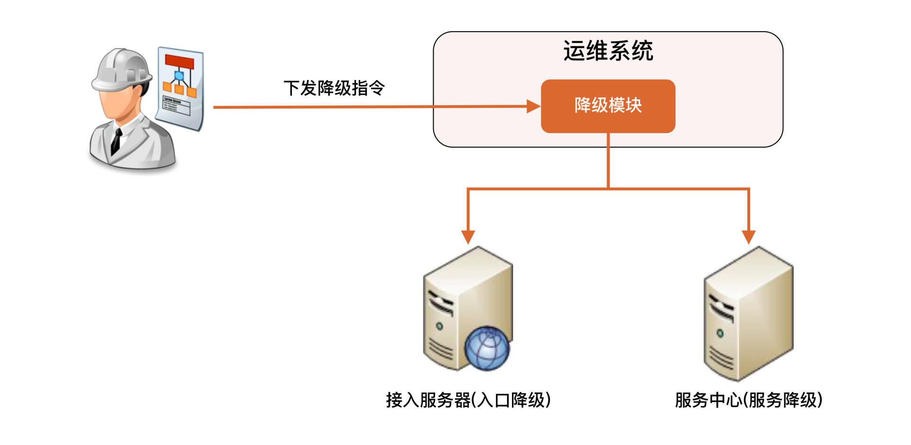

- 00 开篇词 照着做，你也能成为架构师！.md.html
- 01 架构到底是指什么？.md.html
- 02 架构设计的历史背景.md.html
- 03 架构设计的目的.md.html
- 04 复杂度来源：高性能.md.html
- 05 复杂度来源：高可用.md.html
- 06 复杂度来源：可扩展性.md.html
- 07 复杂度来源：低成本、安全、规模.md.html
- 08 架构设计三原则.md.html
- 09 架构设计原则案例.md.html
- 10 架构设计流程：识别复杂度.md.html
- 11 架构设计流程：设计备选方案.md.html
- 12 架构设计流程：评估和选择备选方案.md.html
- 13 架构设计流程：详细方案设计.md.html
- 14 高性能数据库集群：读写分离.md.html
- 15 高性能数据库集群：分库分表.md.html
- 16 高性能NoSQL.md.html
- 17 高性能缓存架构.md.html
- 18 单服务器高性能模式：PPC与TPC.md.html
- 19 单服务器高性能模式：Reactor与Proactor.md.html
- 20 高性能负载均衡：分类及架构.md.html
- 21 高性能负载均衡：算法.md.html
- 22 想成为架构师，你必须知道CAP理论.md.html
- 23 想成为架构师，你必须掌握的CAP细节.md.html
- 24 FMEA方法，排除架构可用性隐患的利器.md.html
- 25 高可用存储架构：双机架构.md.html
- 26 高可用存储架构：集群和分区.md.html
- 27 如何设计计算高可用架构？.md.html
- 28 业务高可用的保障：异地多活架构.md.html
- 29 异地多活设计4大技巧.md.html
- 30 异地多活设计4步走.md.html
- 31 如何应对接口级的故障？.md.html
- 32 可扩展架构的基本思想和模式.md.html
- 33 传统的可扩展架构模式：分层架构和SOA.md.html
- 34 深入理解微服务架构：银弹 or 焦油坑？.md.html
- 35 微服务架构最佳实践 - 方法篇.md.html
- 36 微服务架构最佳实践 - 基础设施篇.md.html
- 37 微内核架构详解.md.html
- 38 架构师应该如何判断技术演进的方向？.md.html
- 39 互联网技术演进的模式.md.html
- 40 互联网架构模板：存储层技术.md.html
- 41 互联网架构模板：开发层和服务层技术.md.html
- 42 互联网架构模板：网络层技术.md.html
- 43 互联网架构模板：用户层和业务层技术.md.html
- 44 互联网架构模板：平台技术.md.html
- 45 架构重构内功心法第一式：有的放矢.md.html
- 46 架构重构内功心法第二式：合纵连横.md.html
- 47 架构重构内功心法第三式：运筹帷幄.md.html
- 48 再谈开源项目：如何选择、使用以及二次开发？.md.html
- 49 谈谈App架构的演进.md.html
- 50 架构实战：架构设计文档模板.md.html
- 51 如何画出优秀的软件系统架构图？.md.html
- 加餐｜业务架构实战营开营了.md.html
- 加餐｜单服务器高性能模式性能对比.md.html
- 加餐｜扒一扒中台皇帝的外衣.md.html
- 如何高效地学习开源项目 华仔，放学别走！ 第3期.md.html
- 新书首发 《从零开始学架构》.md.html
- 架构专栏特别放送 华仔，放学别走！ 第2期.md.html
- 架构专栏特别放送 华仔，放学别走！第1期.md.html
- 架构师必读书单 华仔，放学别走！ 第5期.md.html
- 架构师成长之路 华仔，放学别走！ 第4期.md.html
- 结束语 坚持，成就你的技术梦想.md.html
- 捐赠
31 如何应对接口级的故障？
你好，我是华仔。
前几讲我介绍了异地多活方案。它主要用来应对系统级的故障，例如机器宕机、机房故障和网络故障等问题。这些系统级的故障虽然影响很大，但发生概率较小。在实际业务运行过程中，还有另外一种故障影响可能没有那么大，但发生的概率较高，这就是今天我要跟你聊的接口级的故障。
接口级故障的典型表现就是，系统并没有宕机、网络也没有中断，但业务却出现问题了，例如业务响应缓慢、大量访问超时和大量访问出现异常（给用户弹出提示“无法连接数据库”）。
这类问题的主要原因在于系统压力太大、负载太高，导致无法快速处理业务请求，由此引发更多的后续问题。最常见的情况就是，数据库慢查询将数据库的服务器资源耗尽，导致读写超时，业务读写数据库时要么无法连接数据库、要么超时，最终用户看到的现象就是访问很慢，一会儿访问抛出异常，一会儿访问又是正常结果。
如果进一步探究，导致接口级故障的原因可以分为两大类：
- 内部原因：包括程序bug导致死循环，某个接口导致数据库慢查询，程序逻辑不完善导致耗尽内存等。
- 外部原因：包括黑客攻击，促销或者抢购引入了超出平时几倍甚至几十倍的用户，第三方系统大量请求，第三方系统响应缓慢等。
解决接口级故障的核心思想和异地多活基本类似，都是优先保证核心业务和优先保证绝大部分用户。常见的应对方法有四种，降级、熔断、限流和排队，下面我会一一讲解。
1. 降级
降级指系统将某些业务或者接口的功能降低，可以是只提供部分功能，也可以是完全停掉所有功能。
例如，论坛可以降级为只能看帖子，不能发帖子；也可以降级为只能看帖子和评论，不能发评论；而App的日志上传接口，可以完全停掉一段时间，这段时间内App都不能上传日志。
降级的核心思想就是丢车保帅，优先保证核心业务。
例如，对于论坛来说，90%的流量是看帖子，那我们就优先保证看帖的功能；对于一个App来说，日志上传接口只是一个辅助的功能，故障时完全可以停掉。
常见的实现降级的方式有两种：
1.1 系统后门降级
简单来说，就是系统预留了后门用于降级操作。例如，系统提供一个降级URL，当访问这个URL时，就相当于执行降级指令，具体的降级指令通过URL的参数传入即可。这种方案有一定的安全隐患，所以也会在URL中加入密码这类安全措施。
系统后门降级的方式实现成本低，但主要缺点是如果服务器数量多，需要一台一台去操作，效率比较低，这在故障处理争分夺秒的场景下是比较浪费时间的。
1.2 独立降级系统
为了解决系统后门降级方式的缺点，我们可以将降级操作独立到一个单独的系统中，实现复杂的权限管理、批量操作等功能。
其基本架构如下：

2. 熔断
熔断是指按照规则停掉外部接口的访问，防止某些外部接口故障导致自己的系统处理能力急剧下降或者出故障。

熔断和降级是两个比较容易混淆的概念，因为单纯从名字上看，好像都有禁止某个功能的意思。但它们的内涵是不同的，因为降级的目的是应对系统自身的故障，而熔断的目的是应对依赖的外部系统故障的情况。
假设一个这样的场景：A服务的X功能依赖B服务的某个接口，当B服务的接口响应很慢的时候，A服务的X功能响应肯定也会被拖慢，进一步导致A服务的线程都被卡在X功能处理上，于是A服务的其他功能都会被卡住或者响应非常慢。
这时就需要熔断机制了：A服务不再请求B服务的这个接口，A服务内部只要发现是请求B服务的这个接口就立即返回错误，从而避免A服务整个被拖慢甚至拖死。
实现熔断机制有两个关键点：
一是需要有一个统一的API调用层，由API调用层来进行采样或者统计。如果接口调用散落在代码各处，就没法进行统一处理了。
二是阈值的设计，例如1分钟内30%的请求响应时间超过1秒就熔断，这个策略中的“1分钟”“30%”“1秒”都对最终的熔断效果有影响。实践中，一般都是先根据分析确定阈值，然后上线观察效果，再进行调优。
3. 限流
降级是从系统功能优先级的角度考虑如何应对故障，而限流则是从用户访问压力的角度来考虑如何应对故障。限流指只允许系统能够承受的访问量进来，超出系统访问能力的请求将被丢弃。
虽然“丢弃”这个词听起来让人不太舒服，但保证一部分请求能够正常响应，总比全部请求都不能响应要好得多。
限流一般都是系统内实现的，常见的限流方式可以分为两类：基于请求限流和基于资源限流。
3.1 基于请求限流
基于请求限流指从外部访问的请求角度考虑限流，常见的方式有两种。
第一种是限制总量，也就是限制某个指标的累积上限，常见的是限制当前系统服务的用户总量，例如：某个直播间限制总用户数上限为100万，超过100万后新的用户无法进入；某个抢购活动商品数量只有100个，限制参与抢购的用户上限为1万个，1万以后的用户直接拒绝。
第二种是限制时间量，也就是限制一段时间内某个指标的上限，例如1分钟内只允许10000个用户访问；每秒请求峰值最高为10万。
无论是限制总量还是限制时间量，共同的特点都是实现简单，但在实践中面临的主要问题是比较难以找到合适的阈值。例如系统设定了1分钟10000个用户，但实际上6000个用户的时候系统就扛不住了；或者达到1分钟10000用户后，其实系统压力还不大，但此时已经开始丢弃用户访问了。
即使找到了合适的阈值，基于请求限流还面临硬件相关的问题。例如一台32核的机器和64核的机器处理能力差别很大，阈值是不同的，可能有的技术人员以为简单根据硬件指标进行数学运算就可以得出来，实际上这样是不可行的，64核的机器比32核的机器，业务处理性能并不是2倍的关系，可能是1.5倍，甚至可能是1.1倍。
为了找到合理的阈值，通常情况下可以采用性能压测来确定阈值，但性能压测也存在覆盖场景有限的问题，可能出现某个性能压测没有覆盖的功能导致系统压力很大；另外一种方式是逐步优化：先设定一个阈值然后上线观察运行情况，发现不合理就调整阈值。
基于上述的分析，根据阈值来限制访问量的方式更多的适应于业务功能比较简单的系统，例如负载均衡系统、网关系统、抢购系统等。
3.2 基于资源限流
基于请求限流是从系统外部考虑的，而基于资源限流是从系统内部考虑的，也就是找到系统内部影响性能的关键资源，对其使用上限进行限制。常见的内部资源包括连接数、文件句柄、线程数和请求队列等。
例如，采用Netty来实现服务器，每个进来的请求都先放入一个队列，业务线程再从队列读取请求进行处理，队列长度最大值为10000，队列满了就拒绝后面的请求；也可以根据CPU的负载或者占用率进行限流，当CPU的占用率超过80%的时候就开始拒绝新的请求。
基于资源限流相比基于请求限流能够更加有效地反映当前系统的压力，但实际设计时也面临两个主要的难点：如何确定关键资源，以及如何确定关键资源的阈值。
通常情况下，这也是一个逐步调优的过程：设计的时候先根据推断选择某个关键资源和阈值，然后测试验证，再上线观察，如果发现不合理，再进行优化。
限流算法
为了更好地实现前面描述的各种限流方式，通常情况下我们会基于限流算法来设计方案。常见的限流算法有两大类四小类，它们的实现原理和优缺点各不相同，在实际设计的时候需要根据业务场景来选择。
（1）时间窗
第一大类是时间窗算法，它会限制一定时间窗口内的请求量或者资源消耗量，根据实现方式又可以细分为“固定时间窗”和“滑动时间窗”。
- 固定时间窗
固定时间窗算法的实现原理是，统计固定时间周期内的请求量或者资源消耗量，超过限额就会启动限流，如下图所示：
它的优点是实现简单，缺点是存在临界点问题。例如上图中的红蓝两点只间隔了短短10秒，期间的请求数却已经达到200，超过了算法规定的限额（1分钟内处理100）。但是因为这些请求分别来自两个统计窗口，从单个窗口来看还没有超出限额，所以并不会启动限流，结果可能导致系统因为压力过大而挂掉。
- 滑动时间窗
为了解决临界点问题，滑动时间窗算法应运而生，它的实现原理是，两个统计周期部分重叠，从而避免短时间内的两个统计点分属不同的时间窗的情况，如下图所示：
总体上来看，滑动时间窗的限流效果要比固定时间窗更好，但是实现也会稍微复杂一些。
（2）桶算法
第二大类是桶算法，用一个虚拟的“桶”来临时存储一些东西。根据桶里面放的东西，又可以细分为“漏桶”和“令牌桶”。
- 漏桶
漏桶算法的实现原理是，将请求放入“桶”（消息队列等），业务处理单元（线程、进程和应用等）从桶里拿请求处理，桶满则丢弃新的请求，如下图所示：
我们可以看到漏桶算法的三个关键实现点：
- 流入速率不固定：可能瞬间流入非常多的请求，例如0点签到、整点秒杀。
- 匀速(极速)流出：这是理解漏桶算法的关键，也就是说即使大量请求进入了漏桶，但是从漏桶流出的速度是匀速的，速度的最大值就是系统的极限处理速度（对应图中的“极速”）。这样就保证了系统在收到海量请求的时候不被压垮，这是第一层的保护措施。需要注意的是：如果漏桶没有堆积，那么流出速度就等于流入速度，这个时候流出速度就不是匀速的。
- 桶满则丢弃请求：这是第二层保护措施，也就是说漏桶不是无限容量，而是有限容量，例如漏桶最多存储100万个请求，桶满了则直接丢弃后面的请求。
漏桶算法的技术本质是总量控制，桶大小是设计关键，具体的优缺点如下：
- 突发大量流量时丢弃的请求较少，因为漏桶本身有缓存请求的作用。
- 桶大小动态调整比较困难（例如 Java BlockingQueue），需要不断的尝试才能找到符合业务需求的最佳桶大小。
- 无法精确控制流出速度，也就是业务的处理速度。
漏桶算法主要适用于瞬时高并发流量的场景（例如刚才提到的0点签到、整点秒杀等）。在短短几分钟内涌入大量请求时，为了更好的业务效果和用户体验，即使处理慢一些，也要做到尽量不丢弃用户请求。
- 令牌桶算法
令牌桶算法和漏桶算法的不同之处在于，桶中放入的不是请求，而是“令牌”，这个令牌就是业务处理前需要拿到的“许可证”。也就是说，当系统收到一个请求时，先要到令牌桶里面拿“令牌”，拿到令牌才能进一步处理，拿不到就要丢弃请求。
它的实现原理是如下图所示：

我们可以看到令牌桶算法的三个关键设计点：
- 有一个处理单元往桶里面放令牌，放的速率是可以控制的。
- 桶里面可以累积一定数量的令牌，当突发流量过来的时候，因为桶里面有累积的令牌，此时的业务处理速度会超过令牌放入的速度。
- 如果令牌不足，即使系统有能力处理，也会丢弃请求。
令牌桶算法的技术本质是速率控制，令牌产生的速率是设计关键，具体的优缺点如下：
- 可以动态调整处理速率，实现更加灵活。
- 突发大量流量的时候可能丢弃很多请求，因为令牌桶不能累积太多令牌。
- 实现相对复杂。
令牌桶算法主要适用于两种典型的场景，一种是需要控制访问第三方服务的速度，防止把下游压垮，例如支付宝需要控制访问银行接口的速率；另一种是需要控制自己的处理速度，防止过载，例如压测结果显示系统最大处理TPS是100，那么就可以用令牌桶来限制最大的处理速度。
刚才介绍漏桶算法的时候我提到漏桶算法可以应对瞬时高并发流量，现在介绍令牌桶算法的时候，我又说令牌桶允许突发流量。
你可能会问，这两种说法好像差不多啊，它们到底有什么区别，到底谁更适合做秒杀呢？
其实，令牌桶的“允许突发”实际上只是“允许一定程度的突发”，比如系统处理能力是每秒100 TPS，突发到120 TPS是可以的，但如果突发到1000 TPS的话，系统大概率就被压垮了。所以处理秒杀时高并发流量，还是得用漏桶算法。
令牌桶的算法原本是用于网络设备控制传输速度的，而且它控制的目的是保证一段时间内的平均传输速度。之所以说令牌桶适合突发流量，是指在网络传输的时候，可以允许某段时间内（一般就几秒）超过平均传输速率，这在网络环境下常见的情况就是“网络抖动”。
但这个短时间的突发流量并不会导致雪崩效应，网络设备也能够处理得过来。对应到令牌桶应用到业务处理的场景，就要求即使有突发流量来了，系统自己或者下游系统要真的能够处理的过来，否则令牌桶允许突发流量进来，结果系统或者下游处理不了，那还是会被压垮。
因此，令牌桶在实际设计的时候，桶大小不能像漏桶那样设计很大，需要根据系统的处理能力来进行仔细的估算。例如，漏桶算法的桶容量可以设计为100万，但是一个每秒30 TPS的令牌桶，桶的容量可能只能设计成40左右。海外有的银行给移动钱包提供的接口TPS上限是30，压测到了40就真的挂了。
4. 排队
排队实际上是限流的一个变种，限流是直接拒绝用户，排队是让用户等待一段时间，全世界最有名的排队当属12306网站排队了。
排队虽然没有直接拒绝用户，但用户等了很长时间后进入系统，体验并不一定比限流好。
由于排队需要临时缓存大量的业务请求，单个系统内部无法缓存这么多数据，一般情况下，排队需要用独立的系统去实现，例如使用Kafka这类消息队列来缓存用户请求。
下图是1号店的“双11”秒杀排队系统架构：
 （备注：图片参考刘霄晖《1 号店 11.11：秒杀排队系统设计理念》）
（备注：图片参考刘霄晖《1 号店 11.11：秒杀排队系统设计理念》）
它的基本实现摘录如下：
【排队模块】 负责接收用户的抢购请求，将请求以先入先出的方式保存下来。每一个参加秒杀活动的商品保存一个队列，队列的大小可以根据参与秒杀的商品数量（或加点余量）自行定义。
【调度模块】 负责排队模块到服务模块的动态调度，不断检查服务模块，一旦处理能力有空闲，就从排队队列头上把用户访问请求调入服务模块，并负责向服务模块分发请求。这里调度模块扮演一个中介的角色，但不只是传递请求而已，它还担负着调节系统处理能力的重任。我们可以根据服务模块的实际处理能力，动态调节向排队系统拉取请求的速度。
【服务模块】 负责调用真正业务来处理服务，并返回处理结果，调用排队模块的接口回写业务处理结果。
小结
今天我为你讲了接口级故障的四种应对方法，分别是降级、熔断、限流和排队，希望对你有所帮助。
这就是今天的全部内容，留一道思考题给你吧，如果你来设计一个整点限量秒杀系统，包括登录、抢购、支付（依赖支付宝）等功能，你会如何设计接口级的故障应对手段？
© 2019 - 2023 Liangliang Lee. Powered by gin and hexo-theme-book.